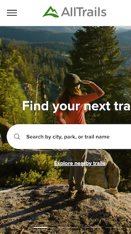
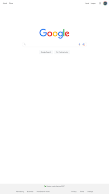

Design Principles
Lee Williamson
PARC: Alignment
AppleThe Apple main page uses a vertical-centered alignment. This focuses the viewer's attention toward the center of the screen, to make their message clear and not scattered. This alignment is particularly suitable for mobile browsers, which make up the bulk of their site visitors.
PARC: Contrast
AllTrails The AllTrails site is a companion to the more utility-focused mobile app. The website creates contrast by cycling through various darker background images, with a white text overlay and search box. This effectively isolates the primary functions of the site, which is to either search for a trail by known names or places, or to explore all trails near the user's location.
PARC: Proximity
Google Google's most popular site on the web also has one of the most simple and utilitarian layouts. It uses the principle of proximity to group understated links to various, mostly related functions, consolidating them into the upper corners and the footer of the page. This leaves the upper-center fully focused on it's most well-known and utilized function: their search engine.